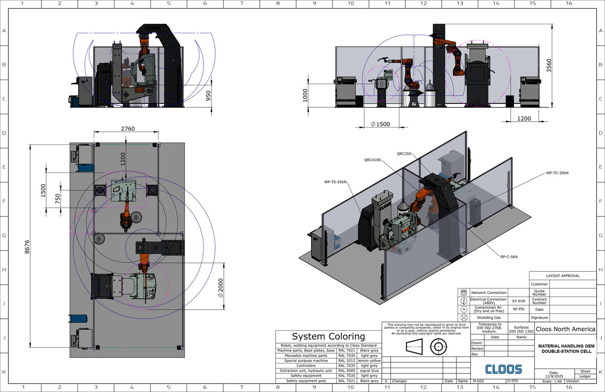

01
Designed by me
Cell designReach study
An enclosed cell that had to load itself
A Fortune 100 heavy equipment maker needed a welding cell that could run without an operator inside the guarding, on parts too heavy to hand-load.
- Problem
- Manual load time was eating the cycle, and the part could not be positioned safely by hand.
- Approach
- Laid out a pick-and-place table and tool drop-off station inside the envelope, then proved the robot could reach every joint on a 100 kN headstock with a 4 m rail before committing to the footprint.
- Result
- A 12.3 m by 8.9 m enclosed cell, approved and built, with tool changeover handled inside the cell instead of by an operator.

SolidWorksReach envelope analysis
Weld accessLayout approval